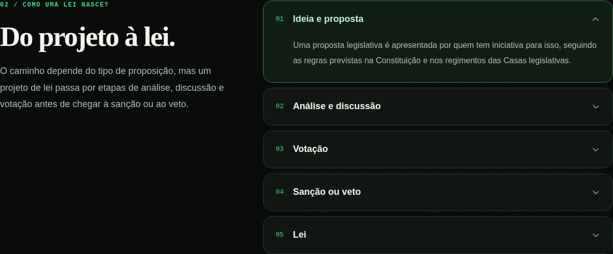

Não. Escolha qualquer um dos cinco temas. Você pode trocar de página pelo menu, voltar à Home pelo nome do projeto e fazer o quiz quando quiser. Nenhum conteúdo depende de concluir outro.
Educação cidadã · 12–18 anos
Seus direitos.
Seus deveres.
Seu lugar no mundo.
Entenda as leis sem complicação. Explore situações do dia a dia e descubra caminhos para participar da sociedade.
Sem cadastro. Sem ordem obrigatória.
Aprender também é explorar
Uma pergunta.
Novas possibilidades.

Quem faz e aplica as leis?
Você escolhe a pergunta.
A gente ajuda a explorar o assunto.
Linguagem acessível
Navegação livre
Exemplos do cotidiano
Escolha o seu ponto de partida
Por onde você
quer começar
?
Cinco temas para explorar no seu ritmo. Sem etapas para desbloquear e sem um caminho obrigatório.
PARA ENTENDER O ESSENCIAL
Direitos e Deveres
Entenda as garantias e as responsabilidades que fazem parte da vida em sociedade.
Explorar o temaUM MAPA PARA EXPLORAR
Conheça as Leis
Escola, saúde, consumo, trabalho: encontre os temas que se conectam com o seu dia a dia.
Explorar o temaPOR DENTRO DO PROCESSO
Quem faz e aplica as leis?
Explore as instituições e acompanhe as etapas de uma proposta de lei.
Explorar o temaDO CONHECIMENTO À PRÁTICA
Como usar seus direitos
Reconheça dúvidas do cotidiano e conheça caminhos para buscar informação e orientação.
Explorar o temaQUIZ · CIDADÃO EM AÇÃO
Teste seus conhecimentos
Escolha uma resposta, descubra a explicação e aprenda também com as dúvidas.
Experimentar o quizQuem somos
Menos complicação.
Mais compreensão.
O Direitos e Deverdade é um projeto acadêmico com proposta de atuação no terceiro setor. Nosso objetivo é aproximar jovens da educação cidadã, com explicações visuais e espaço para aprender por exploração.
Somos uma equipe de estudantes de desenvolvimento web. Estamos construindo uma plataforma que conecta conceitos, exemplos e pequenas interações — sem exigir que você já conheça o assunto.
Feito por estudantes.
Pensado para aprender junto.
Pensado para aprender junto.
Sem mistério
Antes do
primeiro clique.
Abra uma pergunta para entender como usar este espaço.
Não. Neste protótipo, a consulta aos conteúdos e as interações não exigem cadastro. As respostas são usadas na própria tela; a Home não coleta nome, e-mail ou informações pessoais.
Não. O conteúdo tem finalidade educativa e apresenta explicações gerais. Uma situação concreta pode precisar da orientação de uma pessoa ou instituição adequada. Você não precisa resolver tudo sozinho.
O que você já sabe?
O quiz também é um ponto de partida. Não precisa estudar tudo antes.